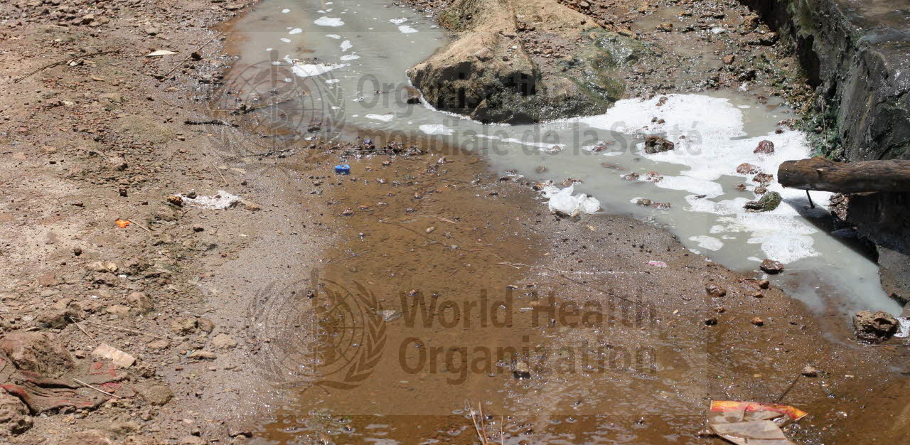
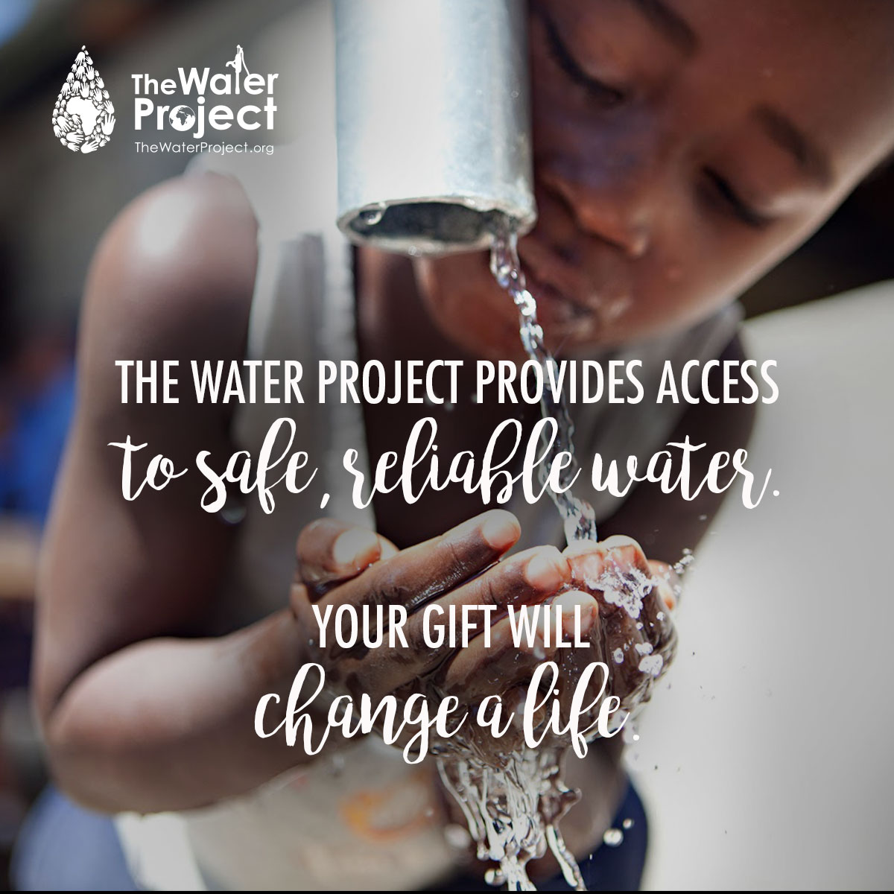

Water and Sanitation Work
Water scarcity affects more than 40% of the global population and is projected to rise.

Image thanks to the World Health Organization
The Problem
At least 1.8 billion people globally use a source of drinking water that is fecally contaminated.
Clean, accessible water for all is an essential part of the world we want to live in. There is sufficient fresh water on the planet to achieve this. But due to bad economics or poor infrastructure, every year millions of people, most of them children, die from diseases associated with inadequate water supply, sanitation and hygiene. Water scarcity, poor water quality and inadequate sanitation negatively impact food security, livelihood choices and educational opportunities for poor families across the world. Drought afflicts some of the world’s poorest countries, worsening hunger and malnutrition.
Water and Sanitation Problems by Country
The Situation in Africa
"Poverty in Africa is often caused by a lack of access to clean, safe water and proper sanitation."
(The Water Project)
There are a number of reasons why poverty has become an epidemic in Africa. Poverty can be the result of political instability, ethnic conflicts, climate change and other man-made causes.
But one of the greatest causes of poverty in Africa is also the most overlooked... the lack of access to clean drinking water.
“Access to water leads to food security. With less crop loss, hunger is reduced. Schools can feed students with gardens, reducing costs.”
Population growth and rural-urban migration
Africa’s rising population is driving demand for water and accelerating the degradation of water resources in many countries on the continent. Among developing regions, Sub-Saharan Africa is estimated to have the highest prevalence of urban slums and it is expected to double to around 400 million by 2020. Despite the efforts of some Sub-Saharan African countries and cities to expand basic services and improve urban housing conditions. Rapid and unplanned urban growth has increased the number of settlements on unstable, flood-prone, and high-risk land where phenomena such as landslides, rains, and earthquakes have devastating consequences.
Economic development and poverty
Sub-Saharan Africa is the world’s poorest and least developed region, with half its population living on less than a dollar a day. About two-thirds of its countries rank among the lowest in the Human Development Index. Even when opportunities exist to address outstanding water issues, deep and widespread poverty across the African region constrains the ability of many cities and communities to provide proper water and sanitation services, sufficient water for economic activities and to prevent water quality from deteriorating.
What can we do?
“When students are freed from gathering water, they return to class. With proper and safe latrines, girls stay in school through their teenage years.”
Image thanks to The Water Project
Civil society organizations should work to keep governments accountable, invest in water research and development, and promote the inclusion of women, youth and indigenous communities in water resources governance. Generating awareness of these roles and turning them into action will lead to win-win results and increased sustainability and integrity for both human and ecological systems.